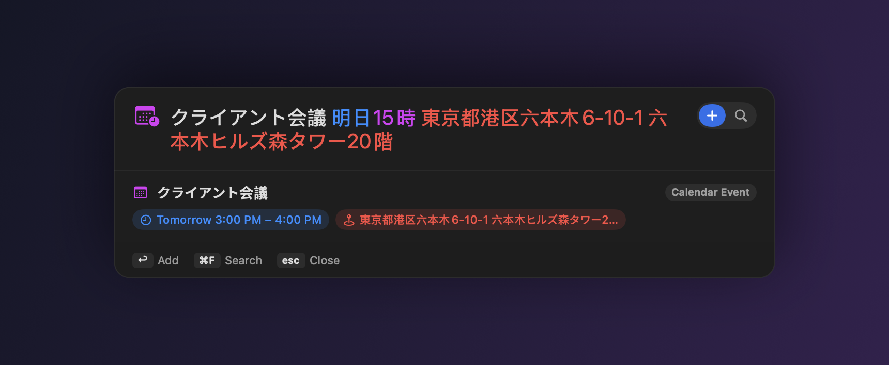
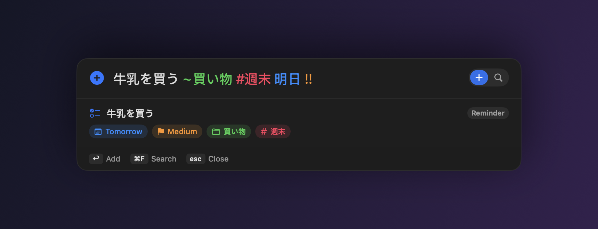
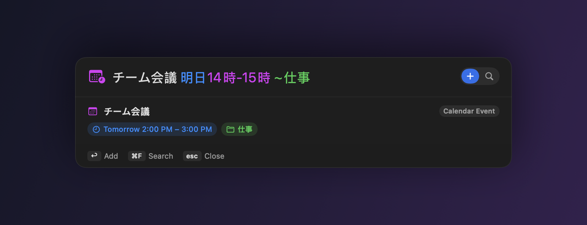
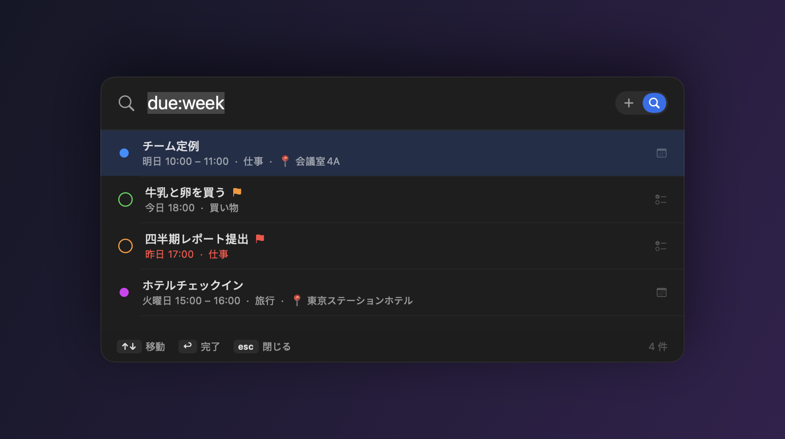

無料・オープンソースの macOS メニューバーアプリ。どの画面でも ⇧⌘A を押して、 思ったまま入力するだけ。時刻・場所・優先度・繰り返しまで埋めて、リマインダー / カレンダーに登録します。

時間範囲か所要時間があれば予定。場所や会議の語があれば予定。それ以外はリマインダー。
| 明日15時 会議 30分 | → カレンダー予定 15:00–15:30 |
| 明日14時-15時 1on1 | → 時間範囲つきの予定 |
| クライアント会議 明日15時 六本木6-10-1 | → 予定、住所 → 場所 📍 |
| 牛乳を買う ~買い物 #週末 !! | → 高優先度のリマインダー（リスト・タグつき） |
| 毎週月曜 午前10時 定例 | → 毎週くり返すリマインダー |


Spotlight 風のパネルがどのアプリの上にも出ます（ショートカットは変更可）。終わると元のアプリにフォーカスを戻します。
時刻・所要時間・範囲・繰り返し・事前アラーム・優先度・場所を、入力した言葉から解析します。
住所つきの会議は「予定」だと判断し、場所を自動で取り出します。
毎日／毎週／毎月、複数曜日（毎週月水金）、×10回 や 金曜まで などの終了条件も。
「今日」一覧と、リマインダー・カレンダー横断検索（is:event due:week）。その場で再スケジュール・完了。
追加ミスは ⌘Z。リストを貼り付け、⌥↩ で各行を一括追加。
すべてローカル。任意でオンデバイスの Apple Intelligence 補正も——データは外に出ません。
MIT ライセンス。アカウント不要・追跡なし・サブスクなし。
